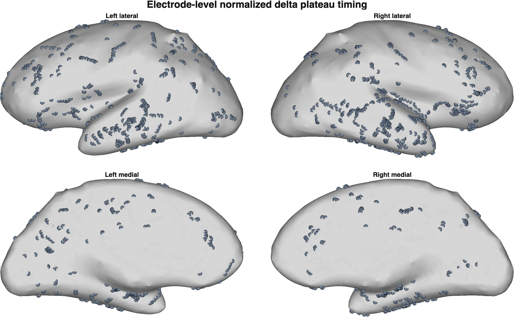

Electrode delta plateau progression
The same four cortical views are shown at every slider position. Each contact remains gray until its selected delta rise reaches the plateau; it then takes the color assigned to its own normalized event time.
Normalized induction time
t = 0.00
0 of 1163 contacts reached plateau
t_norm = (delta_plateau_start_sec - propofol_start_sec) / (object_drop_sec - propofol_start_sec)
t=0 Propofol startt=1 Object dropt=3.00
Use the slider or keyboard arrows to move through normalized time.Frame 1 / 101
Contact event-time color
Color identifies when each electrode reached its delta plateau. It does not represent delta amplitude. Gray contacts have not yet reached their plateau at the selected slider time.
Earliert=1 Object dropLater
Not yet at plateau